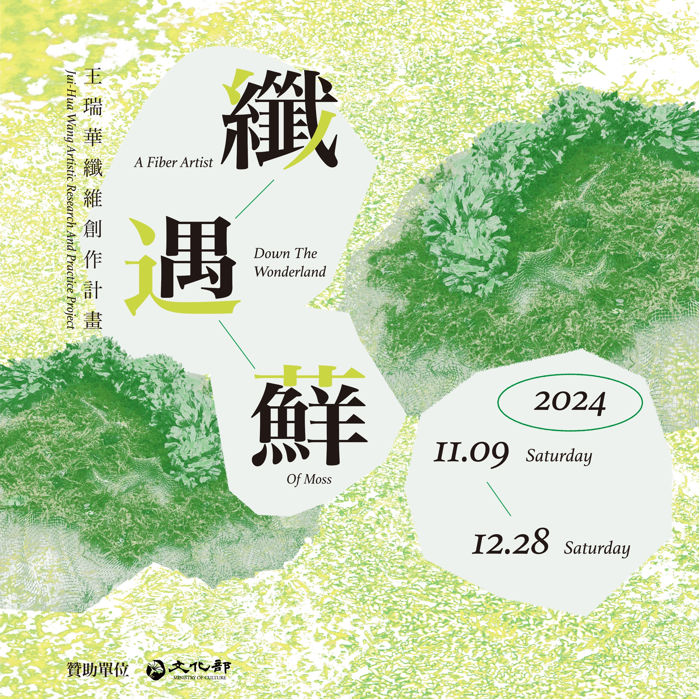

Current Exhibition
2025/12/06 – 2026/01/31
王瑞華纖維創作計畫－纖遇蘚
Exhibitions
那些死過人的樹，都被做成衛生紙：羅硯澤 創作個展
The Trees That Witnessed Death, Now Softened Into Tissue Paper: LUO Yan-Ze Solo Exhibition
家裡的蒼蠅：張程鈞個展
Flies In The House: Chang Cheng-Chun Solo Exhibition
延長線 PLUG&OUTLET
Zhao-Yi WEI Image Exhibition: Sleepless Isle, whispers ride the tide.
News

Art Basel to unveil major commission by Ibrahim Mahama

Book Launch: Virginia Overton ‘Material Girl’ at Stiftung Sitterwerk